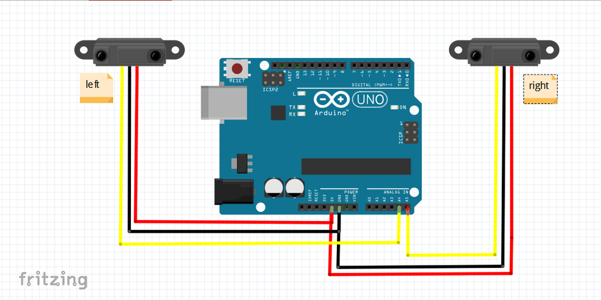
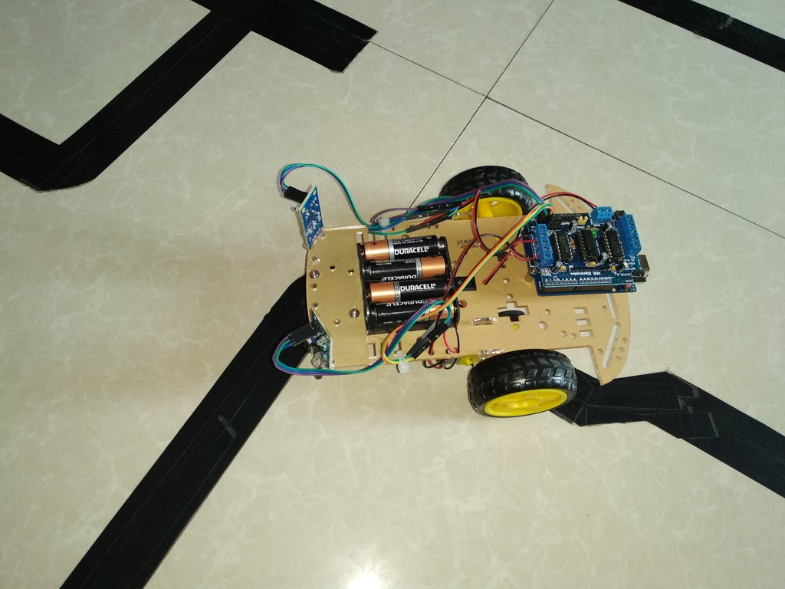
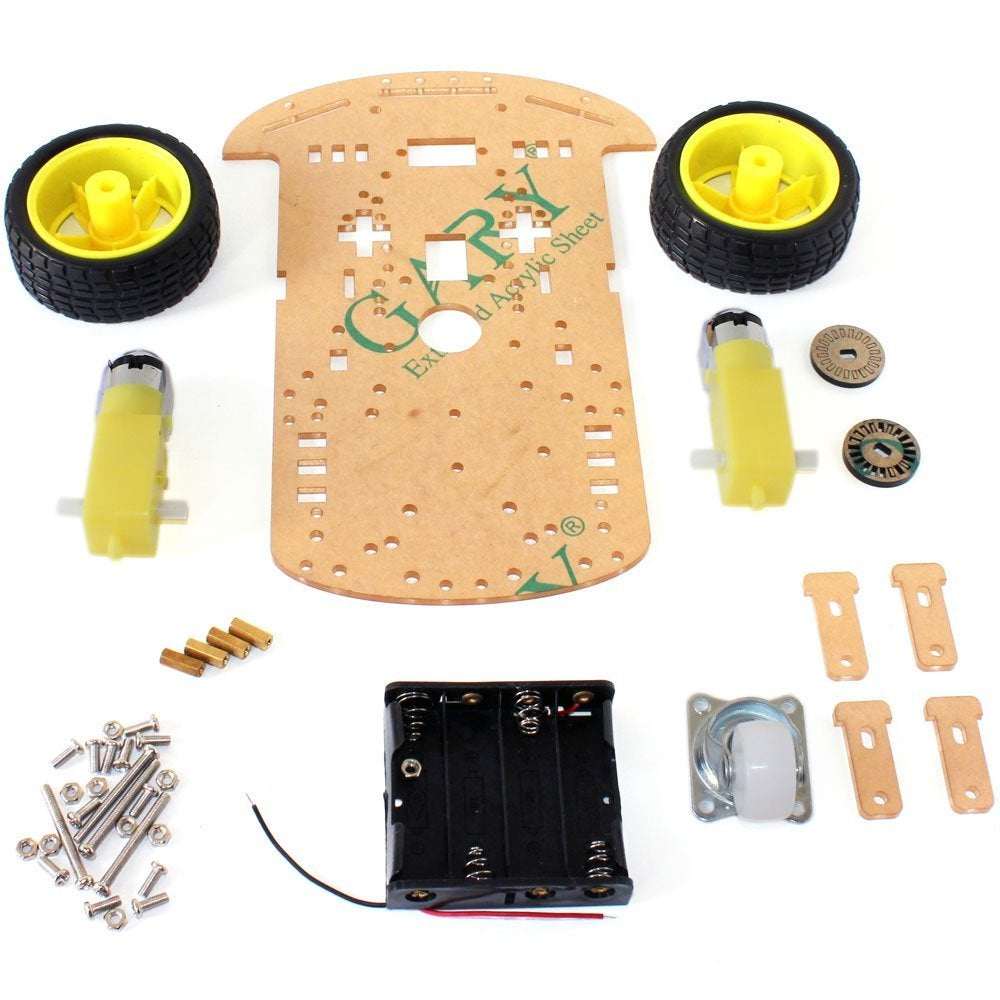

About this project
Components Required
Arduino UNO (or Arduino Nano)
L293D Motor Driver IC
Geared Motors x 2
Robot Chassis
IR Sensor Module x 2
Black Tape (Electrical Insulation Tape)
Connecting Wires
Power supply
Battery Connector
Battery Holder



وصف مخطط الكتلة
المستشعرات (مستشعر الأشعة تحت الحمراء): لقد استخدمنا وحدة مستشعر الأشعة تحت الحمراء كمستشعر للكشف عن الخط للمشروع. يتكون من IR LED وصمام ثنائي للصور وبعض المكونات الأخرى مثل المقارنة
كما ذكرنا سابقًا ، استخدمنا مستشعر الأشعة تحت الحمراء الذي تم تجميعه مسبقًا.
كما هو مذكور في مخطط الكتلة ، نحتاج إلى أجهزة استشعار لاكتشاف الخط. لمنطق اكتشاف الخط ، استخدمنا مستشعرين للأشعة تحت الحمراء ، يتكونان من IR LED و Photodiode. يتم وضعها بطريقة عاكسة ، أي جنبًا إلى جنب بحيث يتم اكتشاف الضوء المنبعث من IR LED بواسطة الصمام الثنائي للصور كلما اقتربت من سطح عاكس.